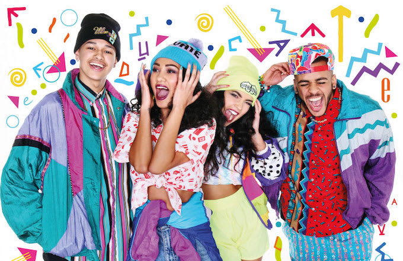

1990's was cool
Culturally, the 1990s are characterized by the rise of multiculturalism and alternative media, which continued into the 2000s. Movements such as grunge, the rave scene and hip hop spread around the world to young people during that decade, aided by then-new technology such as cable television and the World Wide Web.
In the absence of world communism which collapsed in the first two years of the decade the 1990s was politically defined by a movement towards the right-wing, including increase in support for far-right parties in Europe[1] as well as the advent of the Hindu nationalist Bharatiya Janata Party[2] and cuts in social spending in the United States,[3] Canada,[4] New Zealand,[5] and the UK.[6] The United States also saw a massive revival in the use of the death penalty in the 1990s, which reversed in the early 21st century.[7] During the 1990s the character of the European Union and Euro were formed and codified in treaties.
A combination of factors, including the continued mass mobilization of capital markets through neo-liberalism, the thawing of the decades-long Cold War, the beginning of the widespread proliferation of new media such as the Internet from the middle of the decade onwards, increasing skepticism towards government, and the dissolution of the Soviet Union led to a realignment and reconsolidation of economic and political power across the world and within countries. The dot-com bubble of 1997–2000 brought wealth to some entrepreneurs before its crash between 2000 and 2001.
The 1990s saw extreme advances in technology, with the World Wide Web, the first gene therapy trial, and the first designer babies[8] all emerging in 1990 and being improved and built upon throughout the decade.
New ethnic conflicts emerged in Africa, the Balkans, and the Caucasus, the former two which led to the Rwandan and Bosnian genocides, respectively. Signs of any resolution of tensions between Israel and the Arab world remained elusive despite the progress of the Oslo Accords, though The Troubles in Northern Ireland came to a standstill in 1998 with the Good Friday Agreement after 30 years of violence.